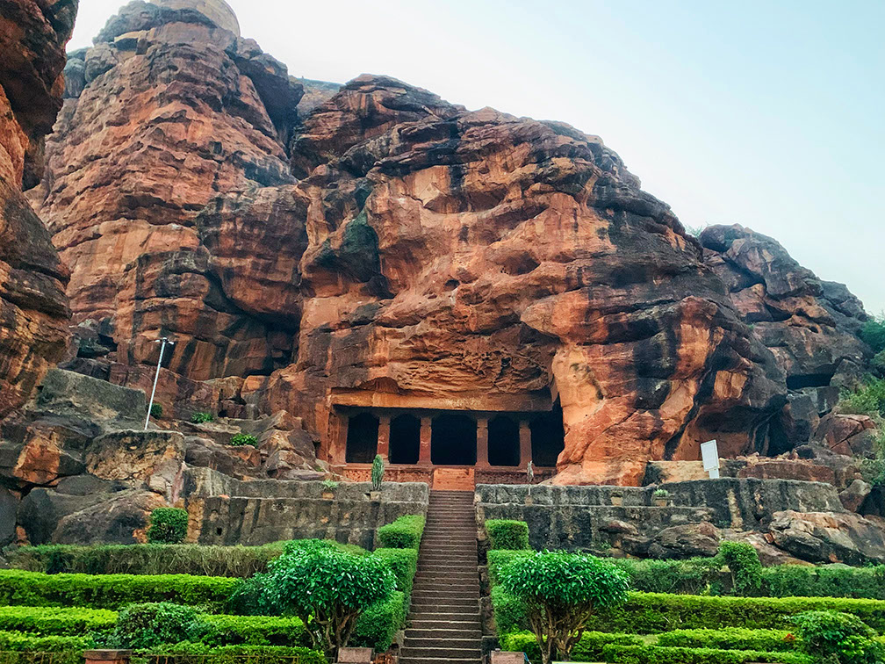
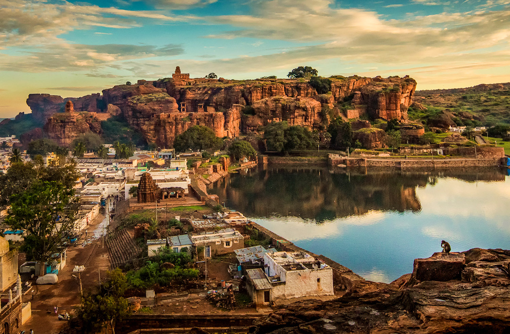
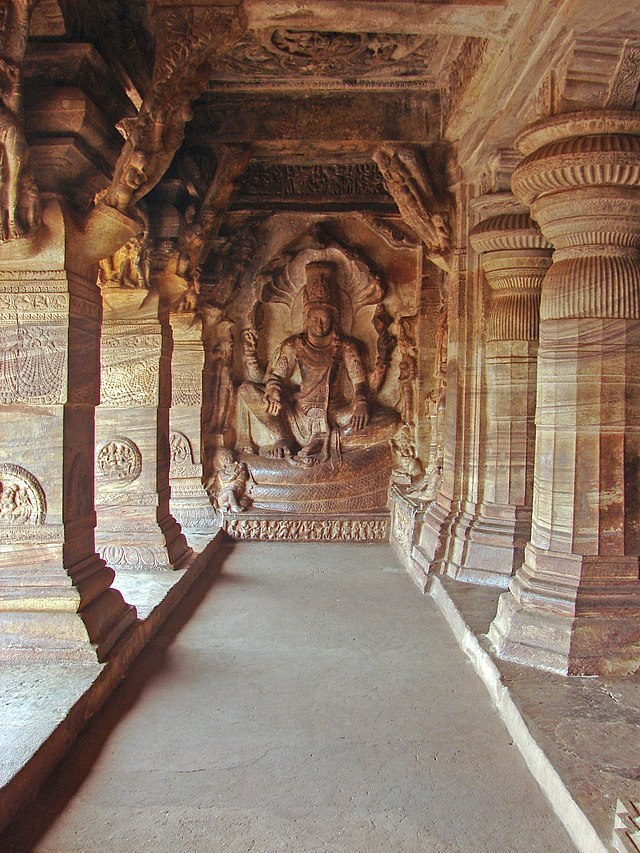
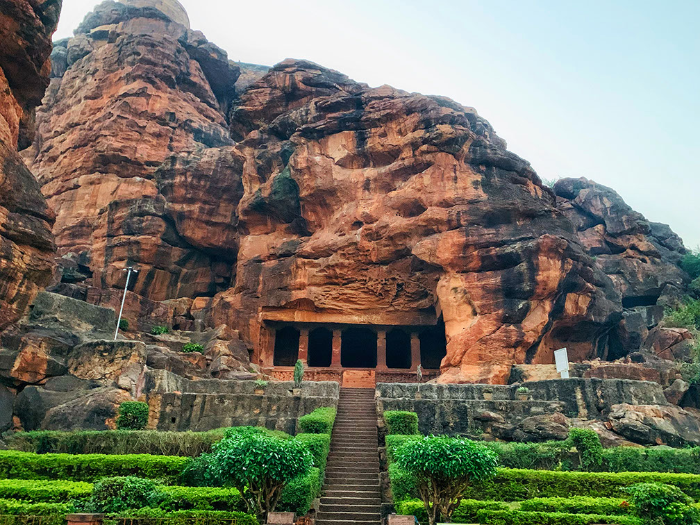
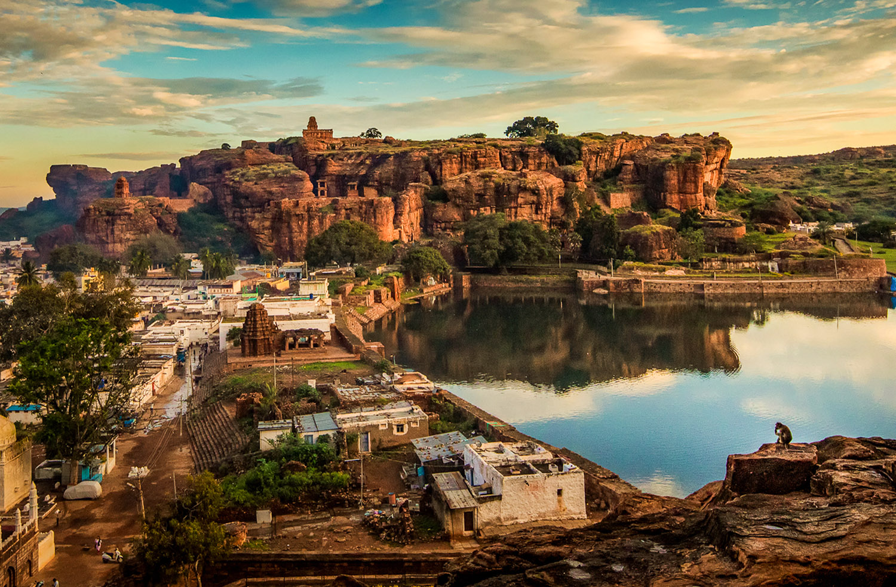
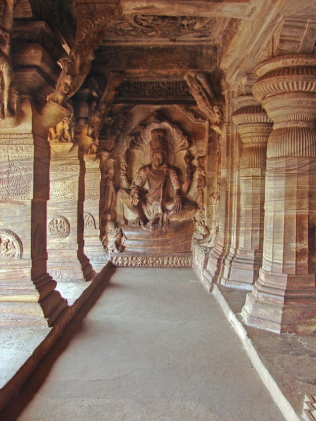

Historic Site
DYNASTY: Chalukya Dynasty
NEAREST CITY: Bagalkot
ARCHITECTURAL STYLE(S): Hindu Rock-Cut Temples
AREA: Approximately 10 square kilometers (3.9 sq mi)
BUILT: 6th–8th century CE
ELEVATION: 550 m (1,804 ft)
GOVERNING BODY: Archaeological Survey of India
 




